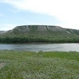

Достопримечательности Иловлинского района
Иловлинский район (официальный сайт  )
расположен в междуречье рек Дон, Иловля и Волга, севернее города Волгограда.
Центром является р.п. Иловля, расположенный на расстоянии 87 км от города Волгограда.
По территории района проходит федеральная трассаМ6 «Каспий».
)
расположен в междуречье рек Дон, Иловля и Волга, севернее города Волгограда.
Центром является р.п. Иловля, расположенный на расстоянии 87 км от города Волгограда.
По территории района проходит федеральная трассаМ6 «Каспий».
Иловлинский район славен своими природными достопримечательностями.
Так на территории района находится уникальный природный памятник Волгоградской области - Природный парк Донской.
Также интересное место для посещения - этнографический музей казачьего быта Казачий курень.
 )
)
Интерактивная карта Иловлинского района с достопримечательностями (увеличить )
1.Музей казачьего быта Казачий курень

Музей казачьего быта Казачий курень — музей народной архитектуры и быта донских казаков под открытым небом. Представляет собой казачью усадьбу конца XIX-начала XX века. Подлинные экспонаты, собранные в экспозиции, воссоздают быт казачества дореволюционного времени.
2.Природный парк Донской
Донской — природный парк регионального значения, расположенный в Иловлинском районе Волгоградской области. Отличается большим природным разнообразием, контрастностью и живописностью ландшафтов. Площадь парка около 62 тыс. га.
3.Памятник Ермаку

В память о знаменитом предке в станице Качалинская установлен памятник «Ермаку Тимофеевичу со товарищи» – мраморная трехметровая глыба с кованым крестом наверху.
4.Сероводородный источник
Более полувека назад, в ходе изыскательных работ из земли забил фонтан высотой более двух метров. Вода, соленная на вкус, постоянно сохраняет температуру +24 градуса. Таких источников на территории России всего семь!, Иловлинский сероводородный источник считается шестым.